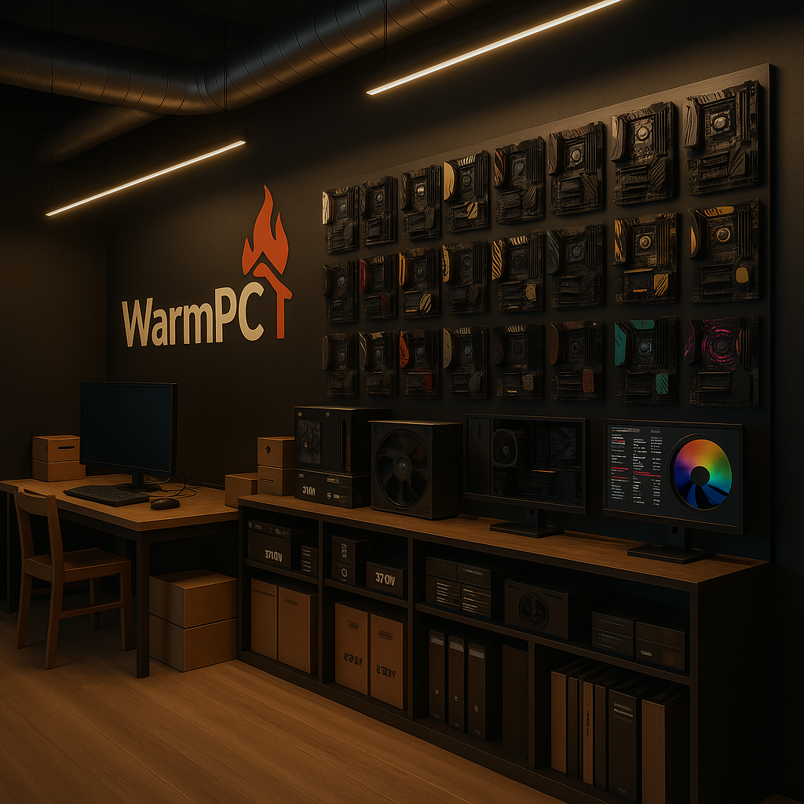
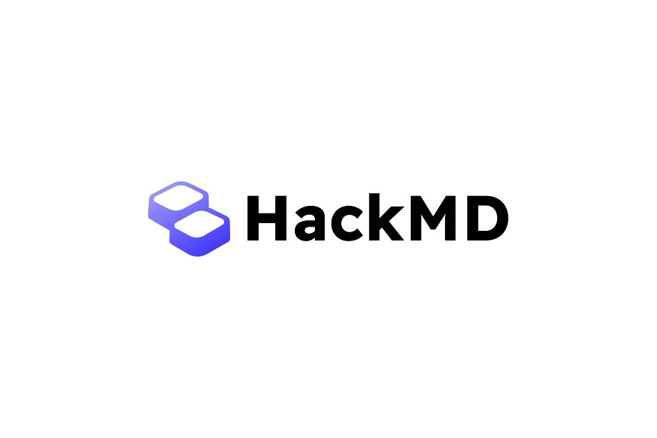

E-commerce Website
- Developed a basic e-commerce website as a course or practice project.
- Used HTML, CSS, JavaScript, PHP, and MySQL with XAMPP for local development and data management.
- Implemented basic features such as user login, membership management, product browsing, and administrator accounts.
- Practiced building common online shopping website features and connecting the frontend with a database.
- Previously tried deploying or configuring access with DuckDNS.

RAG Financial Report Analysis
- Built a RAG-based financial report analysis app that allows users to ask questions about company reports such as Tesla and Palantir.
- Implemented document chunking, vector search, and reranking to retrieve more relevant context before sending it to the LLM.
- Used sentence-transformers for semantic retrieval and experimented with reranking to improve answer quality.
- Built a simple Streamlit Web App for uploading or selecting reports and interacting with the system through a chat-style interface.
- Added prompt constraints to reduce hallucination by asking the model to answer only based on retrieved report content.

My Digital Notes
- Programming Notes: A collection of my learning notes, code examples, and explanations for programming concepts.
- Stock Market Notes: Notes about investing, market observations, and financial knowledge that I have learned over time.
- Personal Records: A place where I organize selected personal notes, learning reflections, and other records.